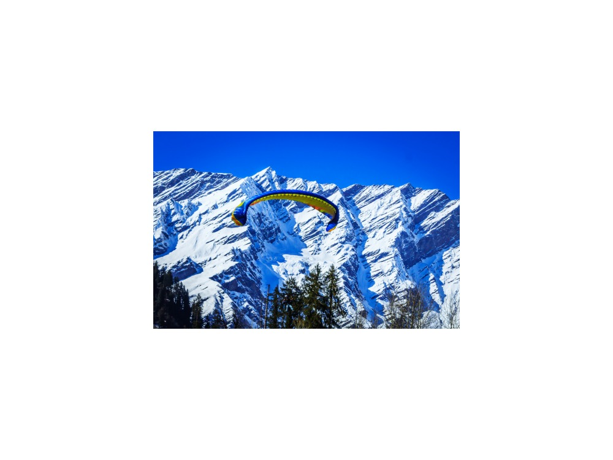
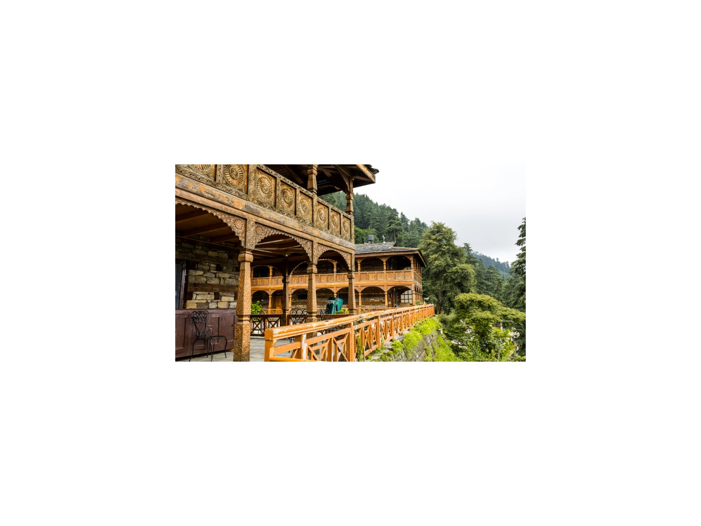
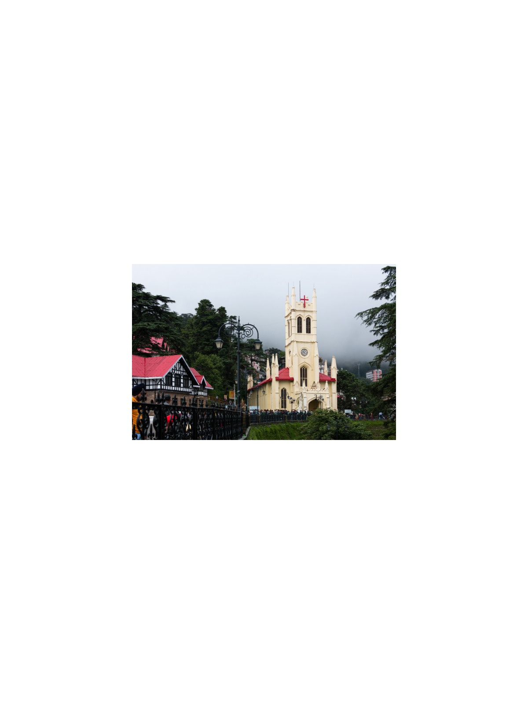
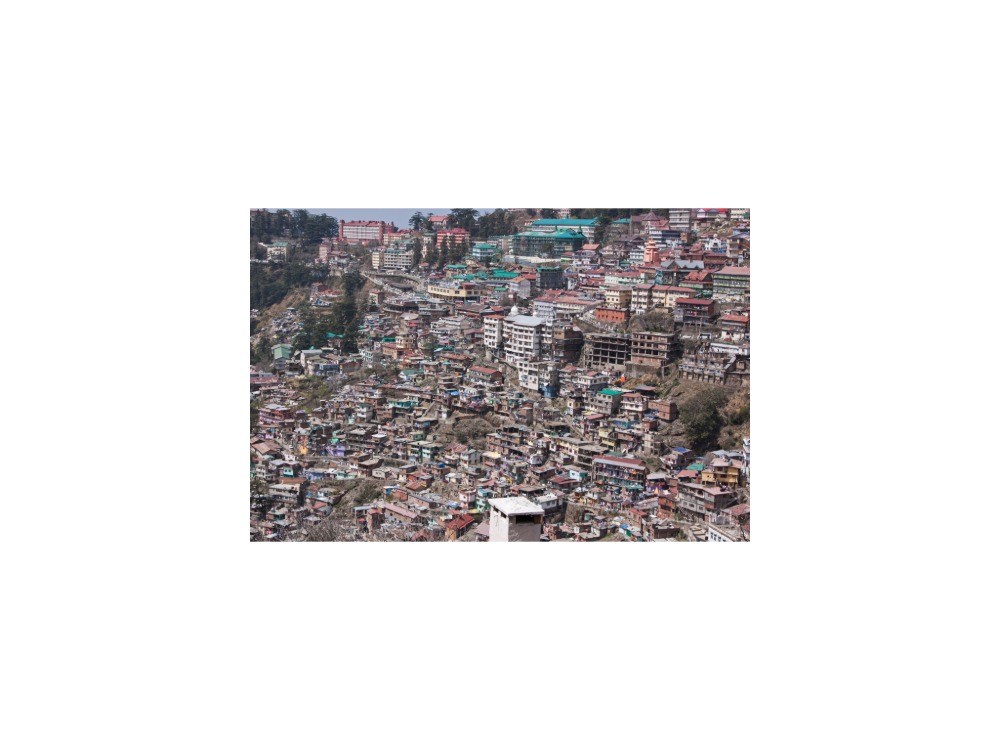

Главная · Направления · Химачал-Прадеш
Химачал-Прадеш
Колониальная Шимла, узкоколейка ЮНЕСКО, долина Куллу и тибетское сердце Мак-Леод Гандж.
Достопримечательности и памятники
 Парапланеризм в Бир-Биллинге
Парапланеризм в Бир-Биллинге Мак-Леод Гандж и комплекс Цуглагханг
Мак-Леод Гандж и комплекс Цуглагханг Храм Хадимба
Храм Хадимба
Долина Соланг Храм Бхутнатх
Храм Бхутнатх
Замок Наггар Усадьба Рерихов в Наггаре
Усадьба Рерихов в Наггаре
Церковь Христа в Шимле
Ридж и Молл-роуд в Шимле Узкоколейка Калка — Шимла
Узкоколейка Калка — Шимла Горячие источники Вашишт
Горячие источники Вашишт Резиденция вице-короля в Шимле
Резиденция вице-короля в Шимле Комплекс Цуглагханг
Комплекс ЦуглагхангПутешествия, которые посещают это направление
8 днейДели · Калка · Шимла · Манди… · Быстрый темп
8 дней: гималайская узкоколейка — Шимла, долина Куллу и Мак-Леод Гандж
Узкоколейка ЮНЕСКО, колониальная Шимла, долина Куллу и тибетские холмы Мак-Леод Гандж за восемь дней.
Подробнее → 9 дней
9 днейДели · Шимла · Манди · Наггар… · Быстрый темп
9 дней: гималайская панорама и Золотой храм
Гималайские городки и монастыри и финал у Золотого храма в Амритсаре — девять дней.
Подробнее →Спланируйте частное путешествие
Расскажите о датах и интересах
Я лично подготовлю программу и расчёт стоимости в течение 24 часов. Никаких групп и шаблонов.